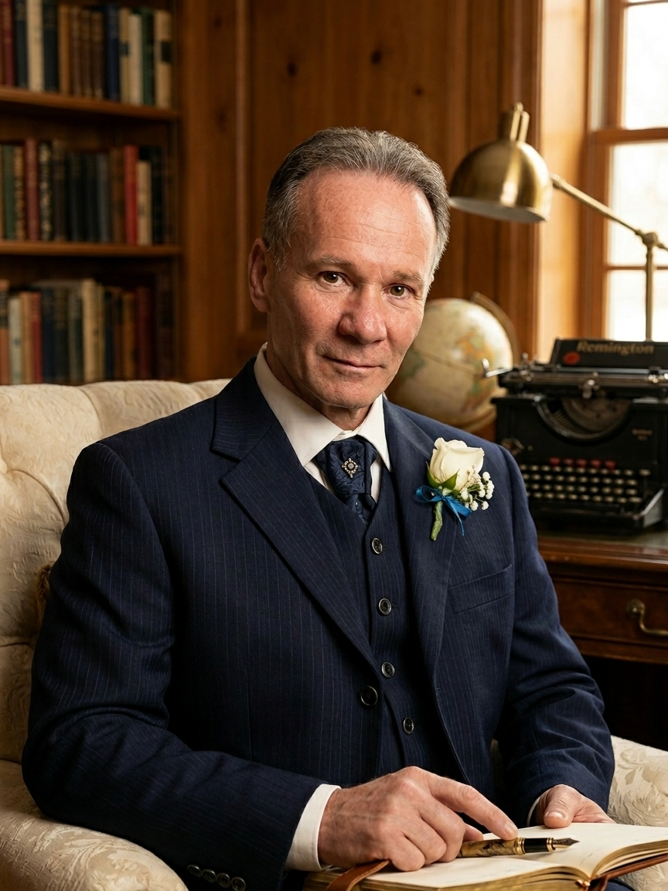

Michele Bottino
Profilo ufficiale dello scrittore e saggista Michele Bottino. Una pagina dedicata al percorso autoriale, alle opere pubblicate e alla linea di scrittura che definisce la sua produzione.

Scrittore e saggista italiano.
Michele Bottino (1972) è uno scrittore e saggista italiano.
La sua produzione comprende opere di narrativa e di saggistica sviluppate all’interno di una linea espressiva orientata al realismo, alla coerenza strutturale e al controllo formale del testo. I suoi lavori affrontano temi legati alla dimensione umana, alle dinamiche di potere e al rapporto tra esperienza individuale e contesto storico.
Nel corso della sua attività ha pubblicato romanzi e saggi, tra cui Stige, Il deposito delle anime, Intrighi Invisibili, Oniro, EUROPA: Anatomia di un crimine e L’Uomo Consapevole.
La sua scrittura si distingue per un’impostazione essenziale e priva di artifici, fondata su precisione linguistica, chiarezza espositiva e coerenza narrativa. L’elaborazione delle opere si fonda su un processo rigoroso di costruzione e verifica del testo, integrato nella pratica della scrittura.
Il suo lavoro si caratterizza per un approccio controllato alla scrittura, in cui ogni elemento è organizzato secondo criteri di coerenza e verificabilità, con l’obiettivo di produrre opere solide, leggibili e prive di ridondanze. Accanto alla produzione narrativa e saggistica, svolge attività di scrittura di testi per ambito musicale, in qualità di autore dei testi.
Michele Bottino si colloca nell’ambito della scrittura narrativa e saggistica contemporanea con un’impostazione fondata sul controllo formale e sulla coerenza strutturale del testo. La sua produzione si distingue per una riduzione sistematica dell’artificio espressivo e per una costruzione rigorosa, orientata alla chiarezza e alla precisione. Al centro del suo lavoro vi è una concezione della scrittura come processo di elaborazione controllata, in cui ogni elemento narrativo è sottoposto a verifica interna e a coerenza funzionale. Questa impostazione si traduce in testi caratterizzati da linearità, stabilità formale e assenza di ridondanze.
I temi affrontati — dalla dimensione individuale alle dinamiche di potere, fino al rapporto tra esperienza e contesto storico — vengono sviluppati attraverso una struttura narrativa che privilegia l’aderenza al reale e la leggibilità, evitando soluzioni stilistiche decorative o deviazioni espressive non necessarie. La sua scrittura si configura come uno spazio regolato, in cui la forma non amplifica il contenuto ma lo rende leggibile, mantenendo un equilibrio costante tra costruzione narrativa e controllo linguistico.